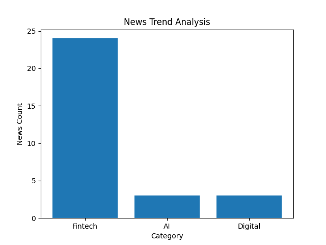

총 30개 뉴스
`26.3. ver1.0
made by Digital L&D Center 이승훈

비바리퍼블리카(토스)와 네이버파이낸셜, 카카오페이 등 ‘핀테크 빅3’는 이용자 기반을 토대로 결제 데이터를 광고와 금융으로 확장하는 구조를 구축하며 합산 순이익 4000억원에 근접하는 성과를 냈다. 특히 오프라인 결제 단말기인 ‘토스프론트’는 누적 약 30만대가 보급되며 가맹점 결제 데이터를 직접 확보하는 기반으로 작용하고 있다. 카카오페이는 결제를 기반으로 보험·투자·대출 등 금융 서비스 확장을 이어가고 있다.
Google | Thu, 02 Apr 2026 22:06:00 GMT
iM금융그룹 제공 iM금융그룹은 핀테크 스타트업 육성 프로그램 '피움랩(FIUM Lab) 8기' 참가 기업을 모집한다고 3일 밝혔다.피움랩은 '핀테크(Fintech)'와 '혁신(Innovation)'을 통해 '스타트업의 성장을 돕는다(UM : 움트다)'는 의미를 담은 iM금융그룹의 전문 액셀러레이팅 프로그램이다.지난 2019년 출범 이후 유망 스타트업을 발굴해 사무 공간 제공, 멘토링, 협업 및 투자 유치를 지원해 왔다.피움랩 8기는 iM금융그룹과 협업 가능성이 높은 초기 단계 스타트업을 육성하는 '인큐베이터', 계열사와 사업화 및 협업을 집중 지원하는 '오픈이노베이션' 두 가지 트랙으로 나눠 모집한다.선발된 기업에는 iM뱅크 제2본점 내 스마트 오피스 공간을 무상 지원하고 신용보증기금의 스타트업 육성 프로그램에 지원하면 가점 혜택을 준다.황병우 iM금융그룹 회장은 "피움랩은 단순한 지원을 넘어 스타트업과 금융그룹이 함께 성장하는 혁신 플랫폼으로 진화하고 있다"라며 "창의적인 아이디어를 가진 스타트업들이 피움랩을 통해 새로운 금융 패러다임을 열어갈 수 있도록 지원을 아끼지 않겠다"라고 전했다.
Google | Fri, 03 Apr 2026 04:53:00 GMT
iM 피움랩 모집 포스터./iM금융그룹 제공 iM금융그룹이 핀테크 스타트업 육성 프로그램 ‘피움랩(FIUM Lab) 8기’ 참가 기업을 모집한다고 2일 밝혔다. 피움랩은 핀테크(Fintech)와 혁신(Innovation)을 통해 스타트업 성장을 지원한다는 의미를 담은 액셀러레이팅 프로그램으로, 2019년 출범 이후 유망 스타트업 발굴과 함께 사무공간 제공, 멘토링, 협업 및 투자 유치 등을 지원해왔다.
Google | Thu, 02 Apr 2026 05:39:00 GMT
(요약 없음 - 본문 추출 실패)
Google | Fri, 03 Apr 2026 06:32:37 GMT
네이버클라우드가 한국핀테크지원센터의 '금융 클라우드 지원 사업'에 7년 연속 공급자로 선정됐다. 네이버클라우드 관계자는 "7년 연속 금융 클라우드 지원 사업을 통해 핀테크 스타트업부터 제1금융권까지 폭 넓은 금융 서비스를 제공 중"이라며 "앞으로도 핀테크 기업들이 안정적인 환경에서 혁신적인 금융 서비스를 개발할 수 있도록 지원을 아끼지 않겠다"고 말했다. (예시) 가장 빠른 뉴스가 있고 다양한 정보, 쌍방향 소통이 숨쉬는 다음뉴스를 만나보세요.
Google | Tue, 31 Mar 2026 00:18:03 GMT
네이버클라우드는 한국핀테크지원센터가 주관하는 '2026 금융 클라우드 지원 사업' 공급자로 7년 연속 선정됐다고 31일 밝혔다. 네이버클라우드가 금융 클라우드 지원 사업 공급자로 7년 연속 선정됐다. 네이버클라우드 관계자는 "7년 연속 금융 클라우드 지원 사업을 통해 핀테크 스타트업부터 제1금융권까지 폭 넓은 금융 서비스를 제공 중"이라며 "앞으로도 핀테크 기업들이 안정적인 환경에서 혁신적인 금융 서비스를 개발할 수 있도록 지원을 아끼지 않겠다"고 밝혔다.
Google | Tue, 31 Mar 2026 01:23:37 GMT
오는 17일부터 다주택자와 임대사업자가 보유한 수도권 아파트 담보대출의 만기 연장이 사실상 불가능해진다. 세입자가 있는 집은 예외적으로 허용된다.올해 수도권에서만 1만2000가구가 규제 대상에 포함돼 이들 매물이 차... 금융 앱 토스를 운영하는 비바리퍼블리카가 지난해 사상 최대 실적을 거뒀다.
Google | Wed, 01 Apr 2026 08:33:10 GMT
3일 금융권에 따르면 금융위원회는 2금융권의 높은 대출 중개 수수료가 중·저신용자에게 비용 부담으로 전가될 수 있다고 보고 이를 1금융권 수준으로 인하하는 방안을 추진 중이다. 또 현재 수수료율이 과거 오프라인 모집인 수수료(2~3%)보다 낮고 플랫폼을 통해 대출 확대 효과도 나타났다고 주장한다. 이에 대해 저축은행 업계는 “수수료 인하는 포용금융 정책의 일환”이라며 “수수료 인하로 저축은행이 추가 이익을 취할 유인은 없다”고 강하게 반박하고 있다.
Google | Fri, 03 Apr 2026 02:39:53 GMT
이철원 어피닛 대표는 "플랫폼 비즈니스 강화로 지난해 빠르게 성과가 올라오면서 역대 최대 실적을 달성했다"며 "올해는 금융 서비스의 깊이와 범위를 동시에 확장하고, 인도는 물론 글로벌 시장 진출을 본격화하며 코스닥 시장에 상장할 것"이라고 말했다. (예시) 가장 빠른 뉴스가 있고 다양한 정보, 쌍방향 소통이 숨쉬는 다음뉴스를 만나보세요. 다음뉴스는 국내외 주요이슈와 실시간 속보, 문화생활 및 다양한 분야의 뉴스를 입체적으로 전달하고 있습니다.
Google | Fri, 03 Apr 2026 01:12:03 GMT
(요약 없음 - 본문 추출 실패)
Google | Thu, 02 Apr 2026 08:03:13 GMT
[이 기사에 나온 스타트업에 대한 보다 다양한 기업정보는 유니콘팩토리 빅데이터 플랫폼 '데이터랩'에서 볼 수 있습니다.] 세전이익은 영업이익에서 금융비용·환율 등 손익을 반영한 실질적 사업 성과로, 어피닛의 지난해 세전 이익률은 23.5%다. 어피닛 관계자는 "높은 수익성의 핵심 배경은 금융 플랫폼 매출 확대"라며 "지난해부터 자체 금융 상품 판매 외에 다른 금융사들의 상품 중개를 통한 수수료 기반 플랫폼 비즈니스 모델을 강화해 고정비 부담을 최소화하면서 고수익성을 실현했다"고 말했다.
Google | Thu, 02 Apr 2026 07:30:00 GMT
이상천 총장은 "최근 디지털 전환이 가속화되면서 데이터, 인공지능, 핀테크 산업은 국가와 지역의 미래 경쟁력을 좌우하는 핵심 분야"라며 "대학과 산업계가 긴밀히 협력해 실무형 인재를 양성하고 혁신 생태계를 구축하는 것이 무엇보다 중요하다"고 말했다. 이어 "양 기관의 역량과 자원이 결합돼 교육·연구·현장 실무가 유기적으로 연계될 경우 지역 산업 발전과 인재 성장, 지역 정주 기반 마련에 크게 기여할 것으로 기대한다"고 강조했다. Copyright ⓒ Metro.
Google | Thu, 02 Apr 2026 23:56:01 GMT
iM금융그룹 제공 iM금융그룹이 14일까지 핀테크 스타트업 육성 프로그램 ‘피움랩(FIUM Lab) 8기’ 참가 기업을 모집한다. 피움랩은 iM금융의 전문 액셀러레이팅 프로그램으로 2019년 출범 이후 유망 스타트업을 지속 발굴해 사무 공간 제공, 멘토링, 협업과 투자 유치 등을 지원해 왔다.
Google | Thu, 02 Apr 2026 12:37:00 GMT
계열사 협업부터 씨엔티테크 직접 투자까지 ‘원스톱’ 지원 iM금융, 핀테크 혁신 스타트업 모집...강력한 성장 모멘텀 제공 이미지 확대보기 이미지=iM금융그룹 iM금융그룹이 핀테크 혁신을 이끌 스타트업 모집에 나섰다.2일 iM금융이 핀테크 스타트업 육성 프로그램 ‘피움랩(FIUM Lab) 8기’의 참가 기업을 모집한다고 밝혔다.피움랩 8기는 iM금융그룹과 실질적인 시너지를 창출하는 데 초점을 두고 △그룹과 협업 가능성이 높은 초기 단계 스타트업을 육성하는 ‘인큐베이터’ △그룹 계열사와 즉각적인 사업화 및 협업을 집중 지원하는 ‘오픈이노베이션’ 두 가지 트랙으로 나눠 모집한다.선발된 기업에는 강력한 성장 모멘텀이 제공된다.
Google | Thu, 02 Apr 2026 08:01:16 GMT
(왼쪽 네번째부터) 이정현 하나은행 외환사업단장, 송병철 KB국민은행 부행장, 진성원 우리카드 사장, 박종석 금융결제원장, 장정수 한국은행 부총재보, Ms. Aida S. Budiman 인도네시아 중앙은행 부총재보 / 사진제공=금융결제원 금융결제원부터 수출입銀까지, '핀테크 블루오션' 인도네시아 시장 노크 [은행은 지금] 이미지 확대보기 2.7억 인구·낮은 금융포용…핀테크 블루오션 활짝 수출입은행, 인니 국부펀드 손잡고 정책금융 확대
Google | Thu, 02 Apr 2026 07:15:33 GMT
쇼핑 락인 전략, 안면인식…혁신 속도 사진 확대 [네이버페이] 앞서 네이버는 지난 23일 오전 경기 성남시 네이버 사옥 ‘그린팩토리’에서 열린 제27기 정기 주주총회에서 올해 중심으로 광고·커머스·금융 전반의 사업 구조 개편에 나서겠다고 밝힌 바 있다.
Google | Tue, 24 Mar 2026 07:00:00 GMT
(요약 없음 - 본문 추출 실패)
Google | Fri, 03 Apr 2026 04:49:00 GMT
(요약 없음 - 본문 추출 실패)
Google | Thu, 02 Apr 2026 01:28:00 GMT
(요약 없음 - 본문 추출 실패)
Google | Fri, 03 Apr 2026 02:16:01 GMT
(요약 없음 - 본문 추출 실패)
Google | Fri, 03 Apr 2026 06:54:16 GMT
한국핀테크산업협회는 국회 의원회관에서 ‘글로벌 경쟁력 강화를 위한 스테이블코인 기반 무역금융 정책·제도·금융 전략 세미나’를 개최했다. 세미나에서는 달러 중심 무역 결제 구조와 원화 스테이블코인 기반 결제 환경을 비교하고 무역 경쟁력 강화 방안을 논의했다. 행사를 공동 주최한 민병덕 더불어민주당 의원은 달러 기반 스테이블코인이 무역·결제 영역으로 확대되고 있다며 원화 스테이블코인을 실제 무역금융 인프라로 구축해야 한다고 강조했다.
Google | Fri, 03 Apr 2026 01:39:07 GMT
‘패스스루 보험’의 종말과 핀테크의 몰락... 스테이블코인 계좌에서 ‘정부 보증’을 삭제하는 미국 금융당국의 결단 전통 은행과 디지털 자산 사이의 거대한 방화벽... 당신의 코인이 뱅크런에서 살아남을 수 없는 이유 금융의 분리... 전통 은행과 핀테크의 경계 확정
Google | Sat, 21 Mar 2026 07:00:00 GMT
(예시) 가장 빠른 뉴스가 있고 다양한 정보, 쌍방향 소통이 숨쉬는 다음뉴스를 만나보세요. 다음뉴스는 국내외 주요이슈와 실시간 속보, 문화생활 및 다양한 분야의 뉴스를 입체적으로 전달하고 있습니다. 31일 금융권에 따르면 JB금융은 최근 안랩의 자회사인 안랩블록체인컴퍼니 지분을 4.96% 확보해 3대 주주가 됐다.
Google | Tue, 31 Mar 2026 08:42:02 GMT
업무 공간에 치우쳤던 부산 문현금융단지가 핀테크 스타트업 육성 인프라와 금융 기회발전특구 사업과 맞물려 시민 친화 공간으로 탈바꿈하고 있다. (예시) 가장 빠른 뉴스가 있고 다양한 정보, 쌍방향 소통이 숨쉬는 다음뉴스를 만나보세요. 다음뉴스는 국내외 주요이슈와 실시간 속보, 문화생활 및 다양한 분야의 뉴스를 입체적으로 전달하고 있습니다.
Google | Wed, 01 Apr 2026 08:41:47 GMT
2017년 설립된 트래블월렛은 모바일 기반 외환·해외 결제 서비스로 빠르게 성장해온 핀테크 기업이다. (예시) 가장 빠른 뉴스가 있고 다양한 정보, 쌍방향 소통이 숨쉬는 다음뉴스를 만나보세요. 다음뉴스는 국내외 주요이슈와 실시간 속보, 문화생활 및 다양한 분야의 뉴스를 입체적으로 전달하고 있습니다.
Google | Tue, 31 Mar 2026 08:39:11 GMT
(요약 없음 - 본문 추출 실패)
Google | Fri, 03 Apr 2026 06:35:22 GMT
3일 금융권에 따르면 국민은행은 신보에 170억원을 특별출연하고, 이를 바탕으로 총 6000억원 규모의 보증서 담보대출을 지원할 계획이다. 양 기관은 일반 협약과 지역기업 특화 협약을 맺었는데, 일반 협약 지원 대상은 △신성장동력산업 영위기업 △유망창업기업 △수출기업 및 해외진출기업 등이다. 일반 협약보증 대상 기업은 3년간 100% 보증비율 우대 또는 연 0.5%p씩 2년간 총 1.0%p의 보증료 지원을 받을 수 있다.
Google | Fri, 03 Apr 2026 01:24:54 GMT
그룹 차원의 해외 손익이 역대 최대를 다시 쓴 데 이어 은행 해외법인 실적도 5800억원대를 넘어섰다. 세전 기준 글로벌 손익은 1조890억원으로 처음 1조원을 넘어섰다. 신한금융은 2일 서울 중구 본사에서 올리버 젠킨 비자 그룹 사장 등 주요 경영진과 만나 글로벌 사업 확대와 미래 금융 협력 방안을 논의했다.
Google | Fri, 03 Apr 2026 04:07:17 GMT
KB국민은행이 은행 전산 시스템의 핵심인 '코어뱅킹'과 관련, 현대화 2단계 사업에 본격 착수했다. 반면 클라우드 기반의 코어뱅킹2는 기능을 잘게 나눠 개발할 수 있어 거래량 변화에 유연하게 대응할 수 있다. 국민은행은 LTO9 기반 백업 장비(PTL)를 운영 환경에 90대 규모로 배치할 계획이다.
Google | Fri, 03 Apr 2026 01:09:14 GMT
주요 은행들이 한국은행이 추진하는 디지털화폐 실증 사업 ‘프로젝트 한강 2단계 사업’에 일제히 참여하면서, 결제 인프라 주도권을 둘러싼 경쟁이 본격화되고 있다. 이번 단계는 예금토큰을 실제 결제에 활용하는 범위를 넓히고 공공 영역까지 연결하는 데 초점이 맞춰지면서, 은행권의 디지털 금융 전략이 시험대에 올랐다는 평가다. 이호성 하나은행장은 “이번 프로젝트 참여 및 업무협약을 통해 하나은행이 예금 토큰 시장 확대를 리드하고, 소상공인의 정산 효율성 증대와 소비자의 새로운 금융 경험을 제공하는 상생형 디지털 생태계의 모범 사례로 만들 것”이라고 밝혔다.
Google | Fri, 03 Apr 2026 01:45:43 GMT